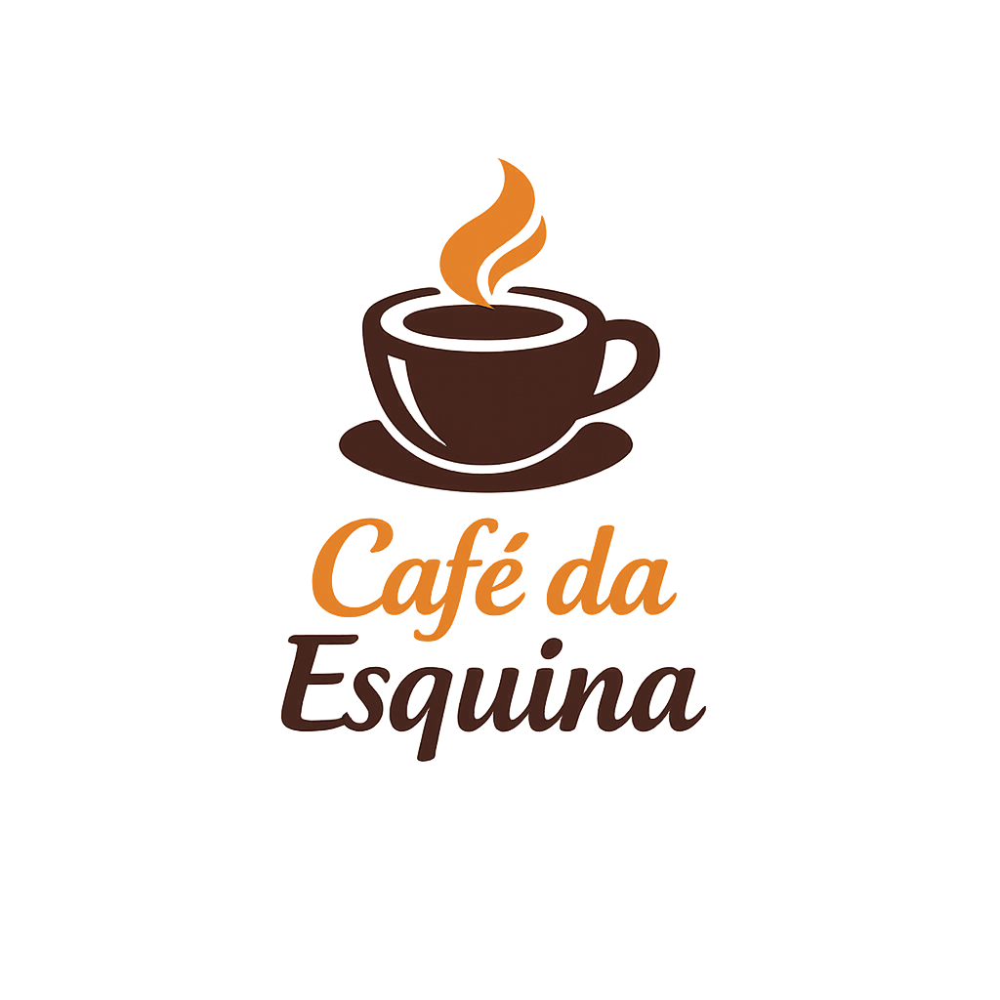
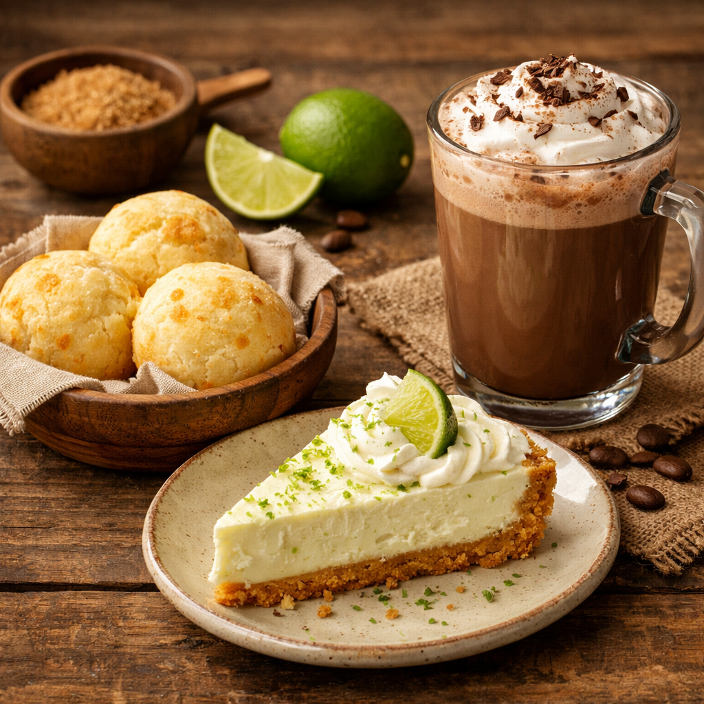

Café da EsquinaSua cafeteria de esquina com um toque moderno e artesanal.
Ver CardápioNascemos do desejo de criar um refúgio no coração do bairro. O Café da Esquina não é apenas uma cafeteria, é um espaço pensado para quem valoriza momentos de pausa, conversas inspiradoras e um ambiente produtivo para trabalhar.
Nossos grãos são selecionados e nossos acompanhamentos são feitos de forma artesanal, garantindo que cada visita seja uma experiência única e acolhedora.

Segunda a Sexta: 08:00 - 20:00
Sábados e Domingos: 09:00 - 18:00
Av. Farroupilha, 8001 - São José
Canoas - RS, 92425-900